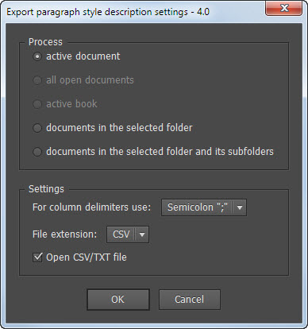
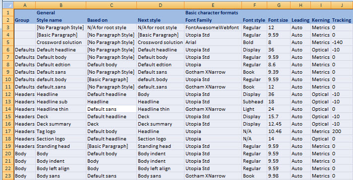
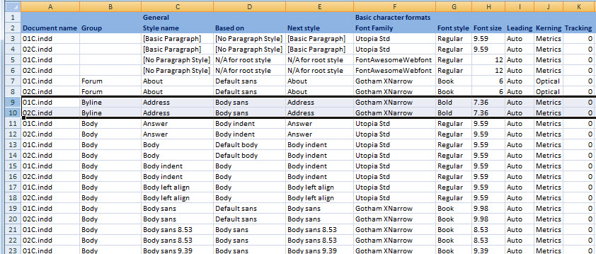
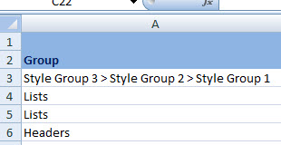
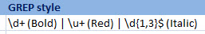
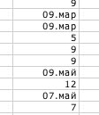
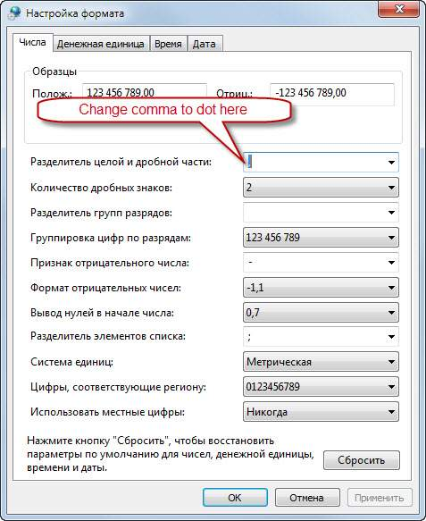
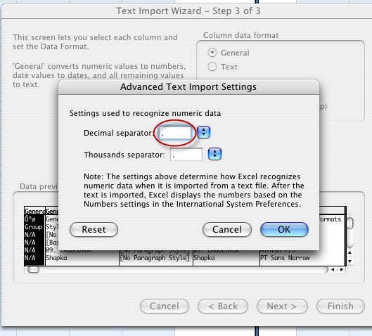

Export paragraph style description settings
Script for InDesign CS3–CC 2014. Version 4.0

The script exports most of the document´s paragraph style description settings to CSV or TXT file which can be opened in Excel. I recommend you to set Excel as the default application for opening csv-files and record a macro for fast formatting the spreadsheet: auto adjust column widths, apply color to the text and background for the first two (header) rows.
You can use Excel´s or Access´s sorting, filtering, etc. features to compare the slightest differences between the same styles in different documents.

If you choose to process anything but the active document, document´s name will be added in the first column. You can sort the Style name column from A to Z and in Excel to compare styles with identical names in different documents.

The Group column displays all nested groups like so:

Tabs, Grep styles, Nested styles and Nested line styles are listed separated by “|” (pile) character:

It´s not the final version yet. So far I didn´t include all the properties available to scripting. Some of them I didn´t find yet. I´ll continue working on it when time permits. I am going to write a similar script for character styles, and maybe for object styles.
I am interested to know what you think about it and open to your suggestions so if you have ideas, or found a bug, feel free to write me. I can´t promise I would answer to all your e-mails, but the more you´re interested in the script, the more time I will spend on it.
There is a common problem which occurs on non-English systems: dates appear instead of floating numbers.

This has nothing to do to Excel, InDesign or the script. There are a few ways to solve the issue.
You can change comma to dot in the “decimal separator” field in you system preferences. For example, on Windows, it should be changed here:

You can also do the following:
- select and copy all the text from the text file
- in Excel select all cells and choose “Text” in “Format Cells” > “Number”
- After that paste the text.
Yet another way is to choose “File” > “Open” in Excel, select the TXT/CSV file and in the “wizard” that appears select “dot” for decimal delimiters in the “Advanced” section.

Click here to download the latest version of the script; the previous version — 3.5 — is here.
Note: the “Export Tagging” feature is buggy in scripting: it doesn´t work the way it should. I attempted to find a workaround and it seems to work for me in the following versions of InDesign: CC 2014 (10.2.0.69 x32 Build), CS6, CS5.5 on Windows and CC (9.0), CS6 on Mac. I´d like to get feedback if it works correctly in other versions: especially in the October release of CC 2014.
In
version 4 I added PDF tag and if EBUP and PDF tags are not changed by the user, they are set to [Automatic] as in InDesign.